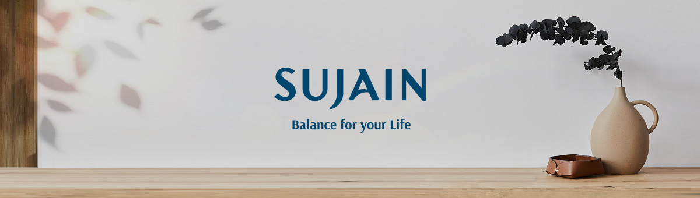
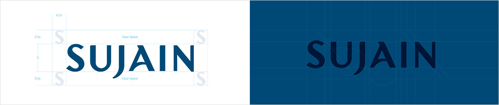
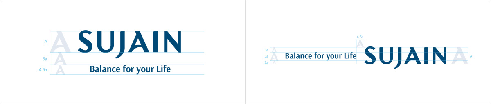

BRAND IDENTITY
수자인의 로고는 가로획과 세로획의 두께 차이를 두어 우아한 조형을 표현하고 있으며,
곡선과 직선의 자연스러운 조화로 수자인에서의 균형있는 삶을 나타냅니다.

브랜드 아이덴티티
베이직 그리드
Design Principle - 곡선과 직선의 조화를 표현, 간결하고 세련된 라이프스타일을 상징합니다.

브랜드 + 슬로건 조합
브랜드의 지향점을 가장 직접적으로 전달하는 커뮤니케이션 수단으로 사용되며, 비율 및 조합에 맞춰 적용합니다.

컬러 시스템
Classy Teal (클래시틸/청록)
메인 컬러인 클래시틸 컬러는 블루와 그린이 아름답게 균형 잡힌 컬러로 시각적 편안함과 심미적 세련됨을 자아냅니다.
- Classy Teal
- Smart Blue
- ECO Green
- People Yellow